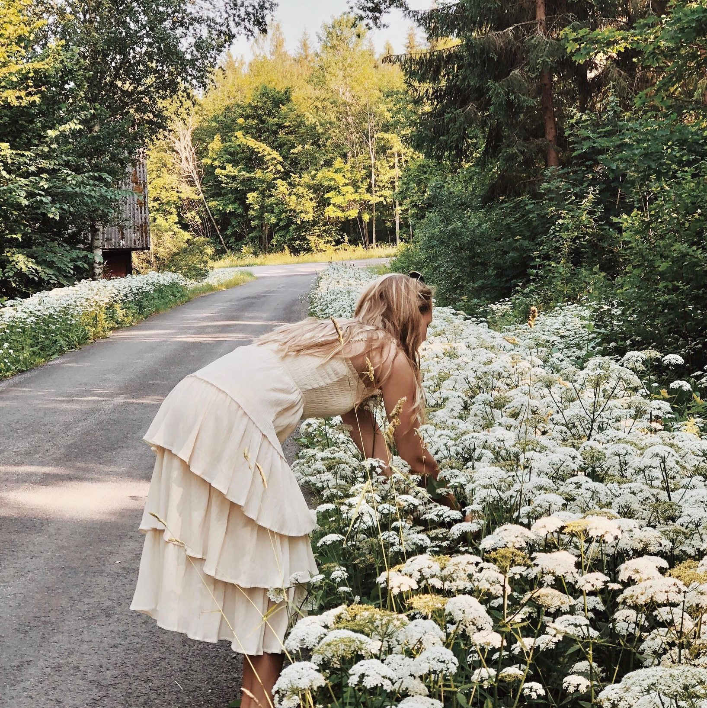

Om mig,
Tidigt i livet fann jag ett intresse för kreativitet. Det jag inte visste var hur jag skulle ta vara på min kreativitet i mitt framtida yrke. Nu vid 22 års ålder tror jag att jag har listat ut vad jag vill syssla med, webbdesign.
Mina favoriter
- Filmer
- The dark knight trilogy & American hustle
- Serier
- The office, Lost och Mad Men
- Skådespelare
- Christian Bale, Ralph Fiennes och Keira Knightley
